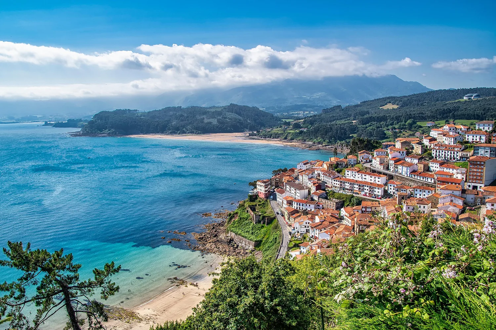
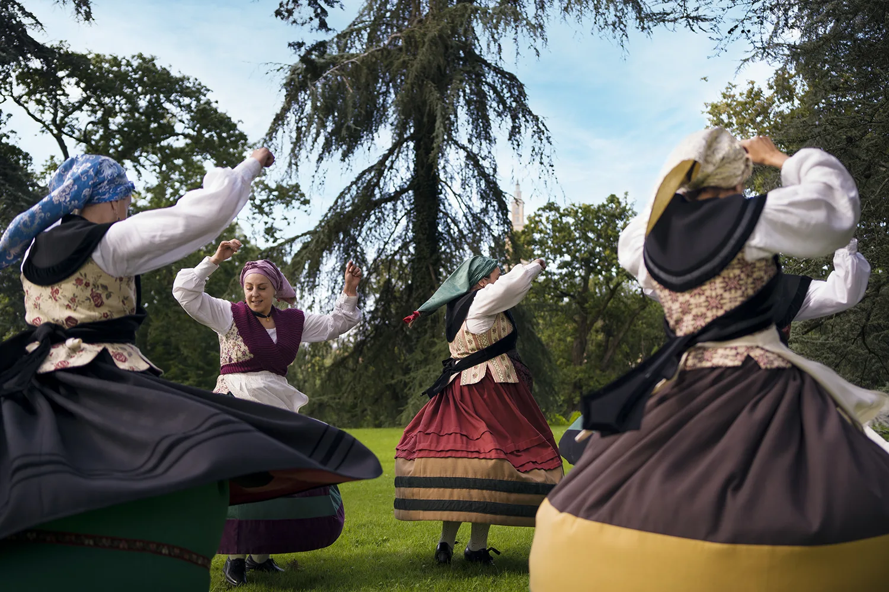
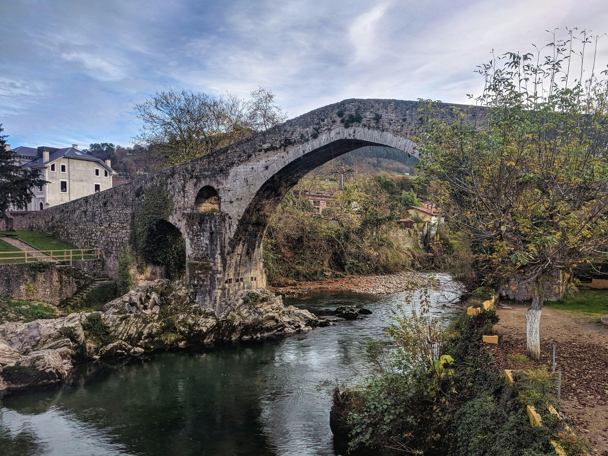
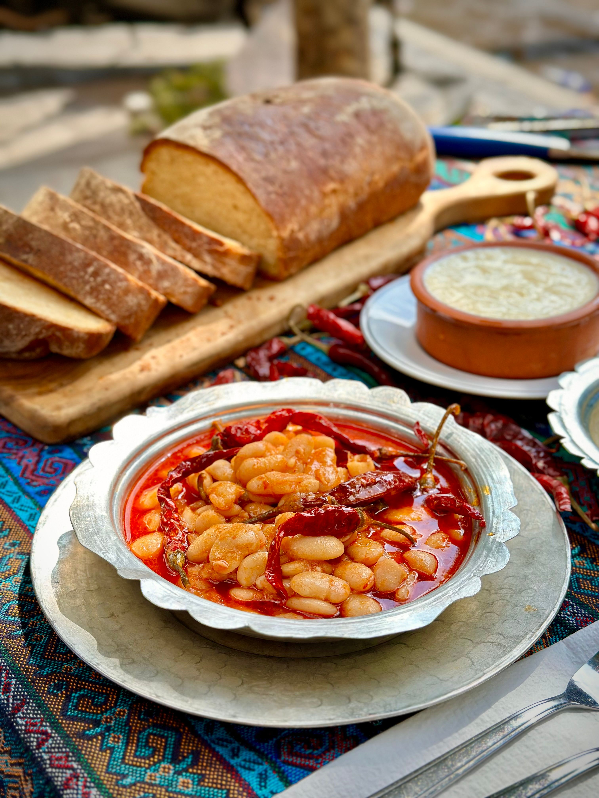

Un aula abierta sobre las tradiciones, el folklore y la historia del Paraíso Natural
Explorar contenidosThe Human Classroom es un proyecto educativo digital que rescata y divulga el patrimonio cultural inmaterial de Asturias. A través de unidades didácticas, mapas interactivos, testimonios en vídeo y materiales descargables, acercamos la cultura asturiana a docentes, estudiantes y a cualquier persona curiosa por su territorio.

Los puertos, la pesca artesanal, los oficios del mar y la relación histórica de Asturias con el Cantábrico.

La gaita, el baile del país, las romerías, el carnaval de Asturias y las festividades populares que perviven.

Del Reino de Asturias a la cuenca minera. Un recorrido por los hitos históricos que forjaron la identidad regional.

La fabada, la sidra, los quesos de Cabrales y los saberes culinarios transmitidos de generación en generación.
Cada unidad didáctica incluye entrevistas en vídeo con portadores de tradición: pescadores, artesanos, músicos y ancianos que son los últimos custodios de saberes que corren el riesgo de desaparecer.
Ver todos los vídeosMás de 20 localizaciones georreferenciadas: concejos, museos etnográficos, puertos pesqueros, yacimientos arqueológicos y espacios naturales con valor cultural.
Abrir mapa interactivoRecibe nuevas unidades didácticas, materiales descargables y recursos para el aula directamente en tu correo. The Human Classroom crece con la comunidad de docentes y personas que aman la cultura asturiana.
Sin spam. Puedes darte de baja en cualquier momento. Tus datos no se comparten con terceros.